1.8 Integration
Reverse differentiation · definite integrals · area · volume of revolution
本页依据 9709 Mathematics 2026–2027 syllabus 1.8 Integration：
- 把 integration 理解为 reverse differentiation，并积分 (ax+b)^n、constant multiples、sums 和 differences；
- 处理 constant of integration；
- 计算 definite integrals，包括简单的 improper integrals；
- 用 definite integration 求由曲线、坐标轴平行直线、直线或两条曲线围成的面积，以及绕坐标轴旋转所得的体积。
下列 19 组题目均来自工作区保存的 Paper 1 原始 past-paper PDF。题干保留原题，只把 PDF 的排版符号整理为 LaTeX；没有改写或编造题目。答案按对应 mark scheme 的得分步骤展开。
1. Core knowledge
Reverse differentiation
若 n\ne -1，则
\int (ax+b)^n\,dx=\frac{(ax+b)^{n+1}}{a(n+1)}+c.
特别地，先把每一项写成幂，再逐项积分：
\int x^n\,dx=\frac{x^{n+1}}{n+1}+c,\qquad \int kf(x)\,dx=k\int f(x)\,dx.
Definite integral, area and volume
\int_a^b f(x)\,dx=F(b)-F(a).
若区域在 x 轴上方，面积为 \int_a^b y\,dx；若曲线和直线之间有上下边界，则积分 “upper − lower”。绕 x 轴旋转时使用
V=\pi\int_a^b y^2\,dx,
若区域不是直接从 x 轴开始，要用外半径平方减内半径平方。绕 y 轴时，可使用
V=\pi\int (x_{\rm outer}^2-x_{\rm inner}^2)\,dy.
2. Verified Paper 1 past-paper questions
Question 1 · 9709/11/O/N/20 Q2
The equation of a curve is such that \dfrac{dy}{dx}=\dfrac{1}{(x-3)^2}+x. It is given that the curve passes through the point (2,7). Find the equation of the curve. [4]
Show detailed mark scheme answer
Rewrite the derivative as (x-3)^{-2}+x and integrate:
y=-\frac{1}{x-3}+\frac{x^2}{2}+c.
Use (2,7):
7=-\frac1{2-3}+\frac{2^2}{2}+c=1+2+c,
so c=4. Therefore
\boxed{y=-\frac1{x-3}+\frac{x^2}{2}+4}.Question 2 · 9709/11/M/J/21 Q1
The equation of a curve is such that \dfrac{dy}{dx}=\dfrac{3}{x^4}+32x^3. It is given that the curve passes through the point \left(\frac12,4\right). Find the equation of the curve. [4]
Show detailed mark scheme answer
Integrate both terms:
y=\int\left(3x^{-4}+32x^3\right)\,dx =-x^{-3}+8x^4+c.
Substitute x=\frac12, y=4:
4=-\left(\frac12\right)^{-3}+8\left(\frac12\right)^4+c =-8+\frac12+c.
Thus c=\frac{23}{2}, hence
\boxed{y=-\frac1{x^3}+8x^4+\frac{23}{2}}.Question 3 · 9709/12/O/N/21 Q4
A curve is such that \dfrac{dy}{dx}=\dfrac{8}{(3x+2)^2}. The curve passes through the point \left(2,5\frac23\right). Find the equation of the curve. [4]
Show detailed mark scheme answer
\frac{dy}{dx}=8(3x+2)^{-2}.
Integrating, with u=3x+2 and du=3\,dx,
y=-\frac{8}{3(3x+2)}+c.
Use \left(2,5\frac23\right):
5\frac23=-\frac{8}{3(8)}+c=-\frac13+c,
so c=6. Thus
\boxed{y=-\frac{8}{3(3x+2)}+6}.Question 4 · 9709/12/O/N/22 Q8(a)
The equation of a curve is such that \dfrac{dy}{dx}=3x^{1/2}-3x^{-1/2}. The curve passes through the point (3,5). Find the equation of the curve. [4]
Show detailed mark scheme answer
y=\int\left(3x^{1/2}-3x^{-1/2}\right)\,dx =2x^{3/2}-6x^{1/2}+c.
Substitute (3,5):
5=2(3)^{3/2}-6(3)^{1/2}+c=6\sqrt3-6\sqrt3+c,
so c=5. Therefore
\boxed{y=2x^{3/2}-6x^{1/2}+5}.Question 5 · 9709/12/F/M/23 Q10(a–b)
At the point (4,-1) on a curve, the gradient of the curve is -\frac32. It is given that \dfrac{dy}{dx}=x^{-1/2}+k, where k is a constant. (a) Show that k=-2. (b) Find the equation of the curve. [5]
Show detailed mark scheme answer
- At x=4,
-\frac32=4^{-1/2}+k=\frac12+k,
so
\boxed{k=-2}.
- Now \dfrac{dy}{dx}=x^{-1/2}-2. Integrate:
y=2x^{1/2}-2x+c.
Use (4,-1):
-1=2(4)^{1/2}-2(4)+c=4-8+c,
so c=3. Hence
\boxed{y=2\sqrt{x}-2x+3}.Question 6 · 9709/11/M/J/21 Q11(a–d)
The equation of a curve is y=2(3x+4)^{1/2}-x.
Find the equation of the normal to the curve at the point (4,4). [5]
Find the coordinates of the stationary point. [3]
Determine the nature of the stationary point. [2]
Find the exact area of the region bounded by the curve, the x-axis and the lines x=0 and x=4. [4]
Show detailed mark scheme answer
\frac{dy}{dx}=\frac{3}{(3x+4)^{1/2}}-1.
At x=4, the tangent gradient is -\frac14, so the normal gradient is 4. Hence
y-4=4(x-4)\Longrightarrow\boxed{y=4x-12}.
\frac{dy}{dx}=0\Longrightarrow\frac{3}{\sqrt{3x+4}}=1 \Longrightarrow x=\frac53.
Then
y=2\sqrt9-\frac53=\frac{13}{3},
so the stationary point is
\boxed{\left(\frac53,\frac{13}{3}\right)}.
\frac{d^2y}{dx^2}=-\frac{9}{2(3x+4)^{3/2}}<0,
so the stationary point is a maximum.
The required area is
A=\int_0^4\left[2(3x+4)^{1/2}-x\right]\,dx.
Integrating term by term:
A=\left[\frac49(3x+4)^{3/2}-\frac{x^2}{2}\right]_0^4.
Therefore
A=\left(\frac49\cdot16^{3/2}-8\right)-\frac49\cdot4^{3/2} =\left(\frac{256}{9}-8\right)-\frac{32}{9} =\boxed{\frac{152}{9}}.Question 7 · 9709/12/M/J/20 Q8(a)
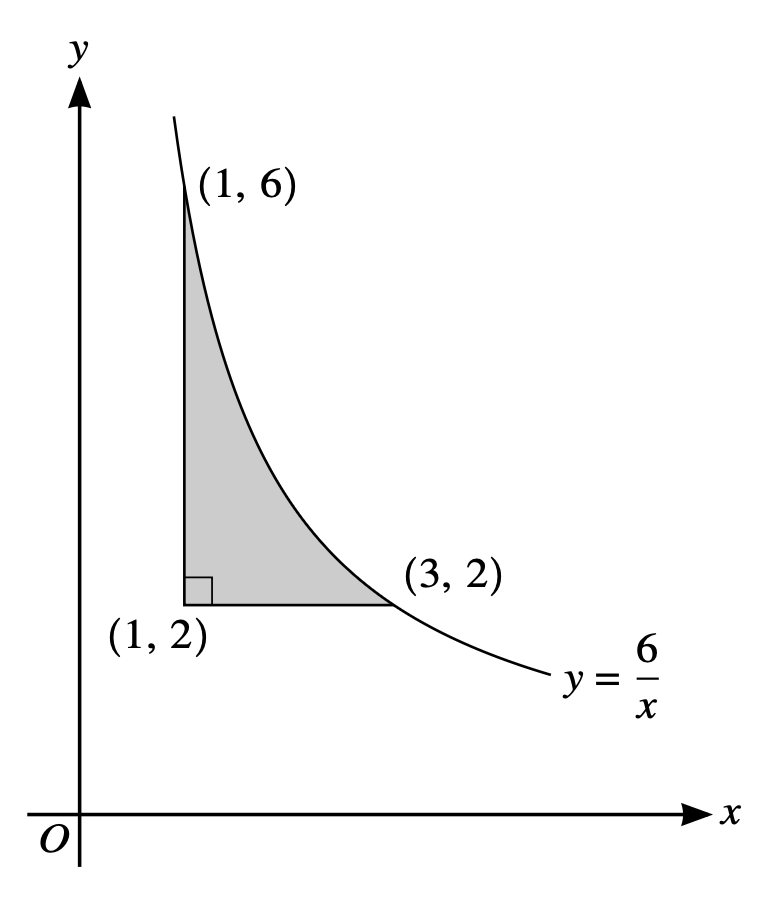
The diagram shows part of the curve y=\dfrac6x. The points (1,6) and (3,2) lie on the curve. The shaded region is bounded by the curve and the lines y=2 and x=1. Find the volume generated when the shaded region is rotated through 360^\circ about the y-axis. [5]
Show detailed mark scheme answer
Use horizontal washers. For 2\le y\le6, the outer radius is x=6/y and the inner radius is x=1:
V=\pi\int_2^6\left[\left(\frac6y\right)^2-1^2\right]\,dy.
V=\pi\left[-\frac{36}{y}-y\right]_2^6 =\pi\left[(-6-6)-(-18-2)\right] =\boxed{8\pi}.Question 8 · 9709/11/M/J/20 Q11(a–b)
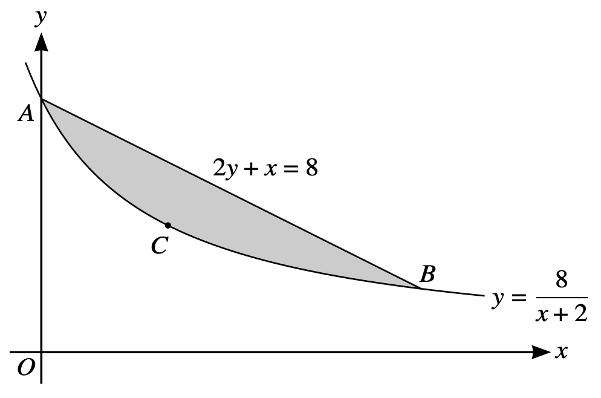
The diagram shows part of the curve y=\dfrac8{x+2} and the line 2y+x=8, intersecting at points A and B. The point C lies on the curve and the tangent to the curve at C is parallel to AB.
Find, by calculation, the coordinates of A, B and C. [6]
Find the volume generated when the shaded region, bounded by the curve and the line, is rotated through 360^\circ about the x-axis. [6]
Show detailed mark scheme answer
- The line is y=4-\frac{x}{2}. Equating it with the curve:
\frac8{x+2}=4-\frac{x}{2} \Longrightarrow x(x-6)=0.
Thus A=(0,4) and B=(6,1). The gradient of AB is -\frac12.
Since
\frac{dy}{dx}=-\frac8{(x+2)^2},
the tangent at C is parallel to AB when
-\frac8{(x+2)^2}=-\frac12\Longrightarrow x=2,
giving C=(2,2).
- From the intersections, the limits are x=0 and x=6. The line is
y=4-\frac{x}{2}.
Volume under the line:
V_{\rm line}=\pi\int_0^6\left(4-\frac{x}{2}\right)^2dx =\pi\left[-\frac{x^3}{12}+2x^2-16x\right]_0^6 =42\pi.
Volume under the curve:
V_{\rm curve}=\pi\int_0^6\left(\frac8{x+2}\right)^2dx =\pi\left[-\frac{64}{x+2}\right]_0^6 =24\pi.
The required volume is their difference:
\boxed{V=42\pi-24\pi=18\pi}.Question 9 · 9709/12/M/J/21 Q9
The diagram shows part of the curve with equation y^2=x-2 and the lines x=5 and y=1. The shaded region enclosed by the curve and the lines is rotated through 360^\circ about the x-axis. Find the volume obtained. [6]
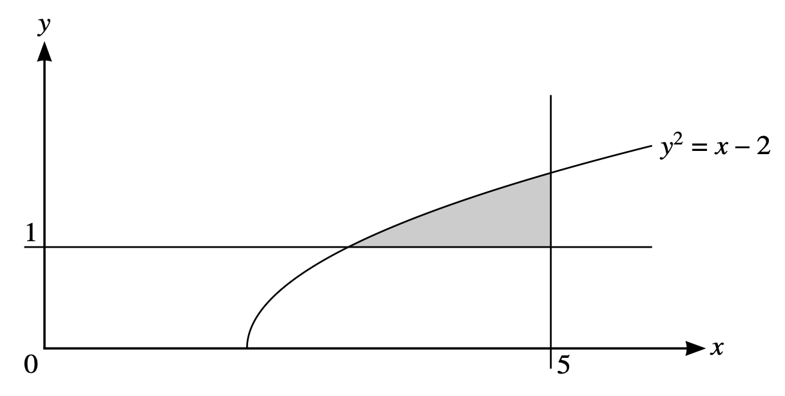
Show detailed mark scheme answer
The curve meets y=1 at x=3, because 1^2=x-2. The volume under the curve from x=3 to x=5 is
\pi\int_3^5 y^2\,dx=\pi\int_3^5(x-2)\,dx =\pi\left[\frac{x^2}{2}-2x\right]_3^5=4\pi.
The part below y=1 is a cylinder of volume
\pi(1)^2(5-3)=2\pi.
Hence the shaded volume is
\boxed{4\pi-2\pi=2\pi}.Question 10 · 9709/11/O/N/21 Q10(a–b)
The curve has equation y=\dfrac{1}{(3x-2)^{3/2}}.
Find \displaystyle\int_1^\infty\dfrac{1}{(3x-2)^{3/2}}\,dx. [4]
The shaded region is bounded by the curve, the x-axis and the lines x=1 and x=2. The shaded region is rotated through 360^\circ about the x-axis. Find the volume of revolution. [4]
Show detailed mark scheme answer
Write the integrand as (3x-2)^{-3/2}:
\int(3x-2)^{-3/2}\,dx =-\frac23(3x-2)^{-1/2}.
Apply the improper limit:
\int_1^\infty\frac{dx}{(3x-2)^{3/2}} =\left[-\frac{2}{3\sqrt{3x-2}}\right]_1^\infty =0-\left(-\frac23\right) =\boxed{\frac23}.
- Since y^2=(3x-2)^{-3},
Question 11 · 9709/11/O/N/21 Q10(a–b)
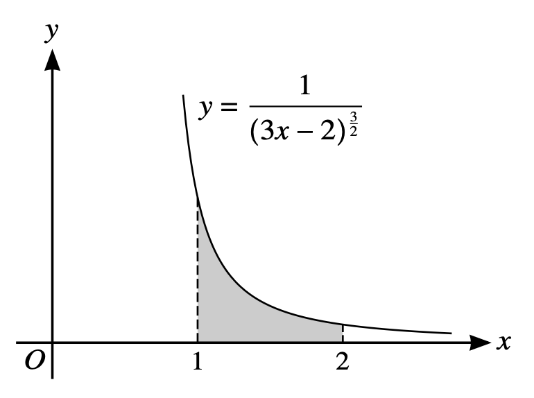
The curve has equation y=\dfrac{1}{(3x-2)^{3/2}}.
Find \displaystyle\int_1^\infty\dfrac{1}{(3x-2)^{3/2}}\,dx. [4]
The shaded region is bounded by the curve, the x-axis and the lines x=1 and x=2. The shaded region is rotated through 360^\circ about the x-axis. Find the volume of revolution. [4]
Show detailed mark scheme answer
The answer to (a) is
\int_1^\infty\frac{dx}{(3x-2)^{3/2}} =\left[-\frac{2}{3\sqrt{3x-2}}\right]_1^\infty =\frac23.
For (b), since y^2=(3x-2)^{-3},
V=\pi\int_1^2(3x-2)^{-3}\,dx.
Integrate:
V=\pi\left[-\frac{1}{6}(3x-2)^{-2}\right]_1^2 =\pi\left(-\frac1{96}+\frac16\right) =\boxed{\frac{5\pi}{32}}.Question 12 · 9709/11/M/J/22 Q7(a–b)
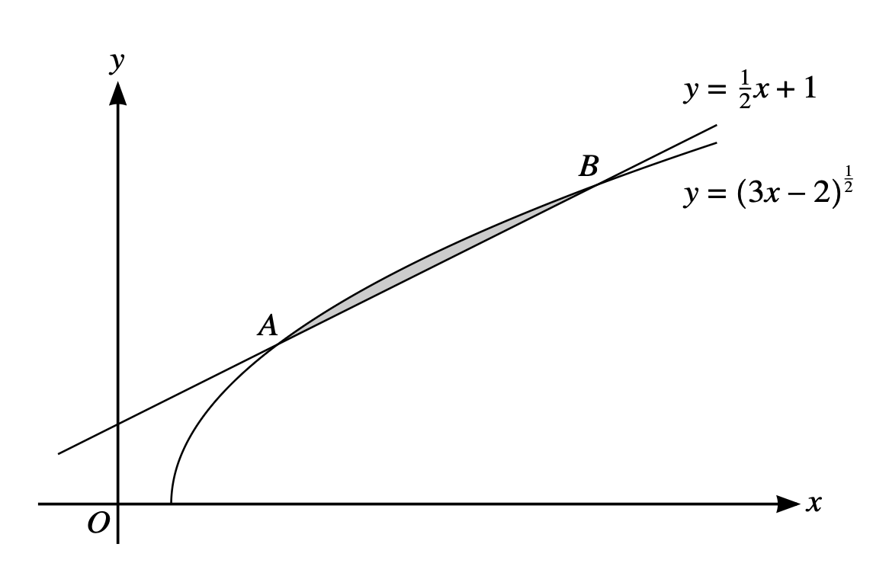
The diagram shows the curve y=(3x-2)^{1/2} and the line y=\frac12x+1. The curve and the line intersect at points A and B.
Find the coordinates of A and B. [4]
Hence find the area of the region enclosed between the curve and the line. [5]
Show detailed mark scheme answer
The intersections satisfy
\sqrt{3x-2}=\frac{x}{2}+1.
Squaring and collecting terms:
3x-2=\left(\frac{x}{2}+1\right)^2 \Longrightarrow x^2-8x+12=0,
so x=2 or x=6. The corresponding points are
\boxed{A=(2,2),\qquad B=(6,4)}.
For (b), on this interval the curve is above the line, so
A=\int_2^6\left[(3x-2)^{1/2}-\left(\frac{x}{2}+1\right)\right]dx.
Thus
A=\left[\frac29(3x-2)^{3/2}-\frac{x^2}{4}-x\right]_2^6 =\frac49.
Therefore
\boxed{A=\frac49}.Question 13 · 9709/11/M/J/23 Q10(a–b)
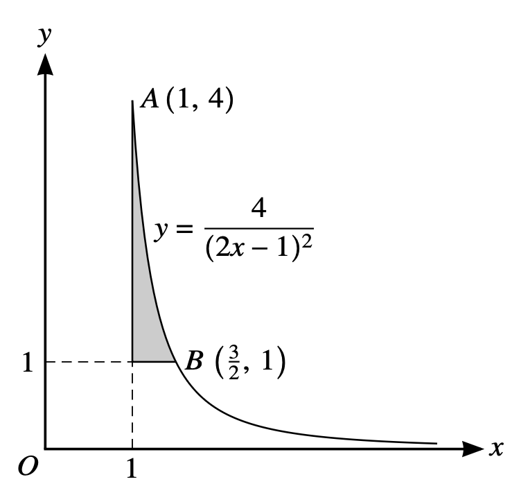
The diagram shows part of the curve with equation y=\dfrac{4}{(2x-1)^2} and parts of the lines x=1 and y=1. The curve passes through the points A(1,4) and B\left(\frac32,1\right).
Find the exact volume generated when the shaded region is rotated through 360^\circ about the x-axis. [5]
A triangle is formed from the tangent to the curve at B, the normal to the curve at B and the x-axis. Find the area of this triangle. [6]
Show detailed mark scheme answer
For 1\le x\le\frac32, the volume under the curve is
V_{\rm curve}=\pi\int_1^{3/2}\frac{16}{(2x-1)^4}\,dx =\pi\left[-\frac{8}{3(2x-1)^3}\right]_1^{3/2} =\frac{7\pi}{3}.
The region below y=1 is a cylinder of volume
V_{\rm cylinder}=\pi\cdot1^2\cdot\left(\frac32-1\right)=\frac{\pi}{2}.
Therefore
\boxed{V=\frac{7\pi}{3}-\frac{\pi}{2}=\frac{11\pi}{6}}.
For (b),
\frac{dy}{dx}=-\frac{16}{(2x-1)^3},\qquad \left.\frac{dy}{dx}\right|_{x=3/2}=-2.
The tangent at B is y=-2x+4 and the normal is y=\frac12x+\frac14. Their x-axis intercepts are 2 and -\frac12, respectively. Thus
\boxed{\text{area}=\frac12\left(2+\frac12\right)(1)=\frac54}.Question 14 · 9709/12/F/M/23 Q11(a–b)
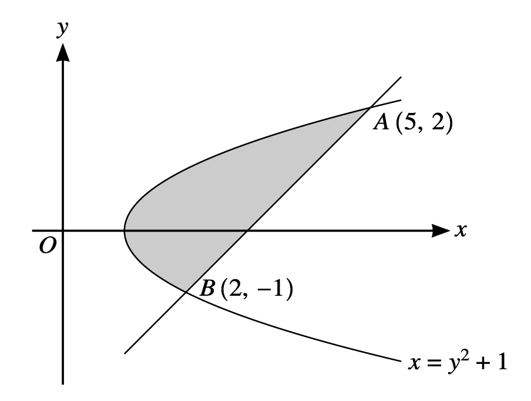
The diagram shows the curve with equation x=y^2+1. The points A(5,2) and B(2,-1) lie on the curve.
Find an equation of the line AB. [2]
Find the volume of revolution when the region between the curve and the line AB is rotated through 360^\circ about the y-axis. [9]
Show detailed mark scheme answer
The gradient of AB is 1, so its equation is
y=x-3,\qquad\text{or}\qquad x=y+3.
Using horizontal washers about the y-axis:
For the curve, x=y^2+1, so
V_{\rm curve}=\pi\int_{-1}^2(y^2+1)^2\,dy =\pi\left[\frac{y^5}{5}+\frac{2y^3}{3}+y\right]_{-1}^2 =\frac{78\pi}{5}.
For the line, x=y+3, so
V_{\rm line}=\pi\int_{-1}^2(y+3)^2\,dy=39\pi.
Subtracting gives
\boxed{V=39\pi-\frac{78\pi}{5}=\frac{117\pi}{5}}.Question 15 · 9709/11/M/J/24 Q9
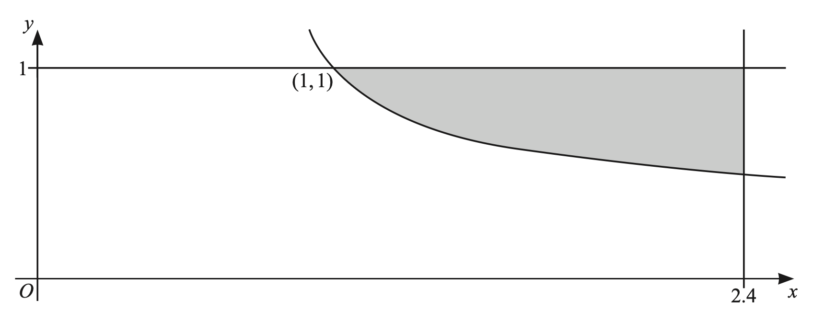
The diagram shows part of the curve with equation y=\dfrac{1}{(5x-4)^{1/3}} and the lines x=2.4 and y=1. The curve intersects the line y=1 at the point (1,1). Find the exact volume of the solid generated when the shaded region is rotated through 360^\circ about the x-axis. [6]
Show detailed mark scheme answer
The curve meets y=1 at x=1, and 2.4=\frac{12}{5}. Since y^2=(5x-4)^{-2/3},
V_{\rm curve}=\pi\int_1^{12/5}(5x-4)^{-2/3}\,dx =\pi\left[\frac{3}{5}(5x-4)^{1/3}\right]_1^{12/5} =\frac{3\pi}{5}.
The cylinder below y=1 has volume
V_{\rm cylinder}=\pi\cdot1^2\left(\frac{12}{5}-1\right)=\frac{7\pi}{5}.
The shaded region is between the line y=1 and the curve, so
\boxed{V=V_{\rm cylinder}-V_{\rm curve} =\frac{7\pi}{5}-\frac{3\pi}{5} =\frac{4\pi}{5}}.Question 16 · 9709/13/M/J/24 Q9(a–b)
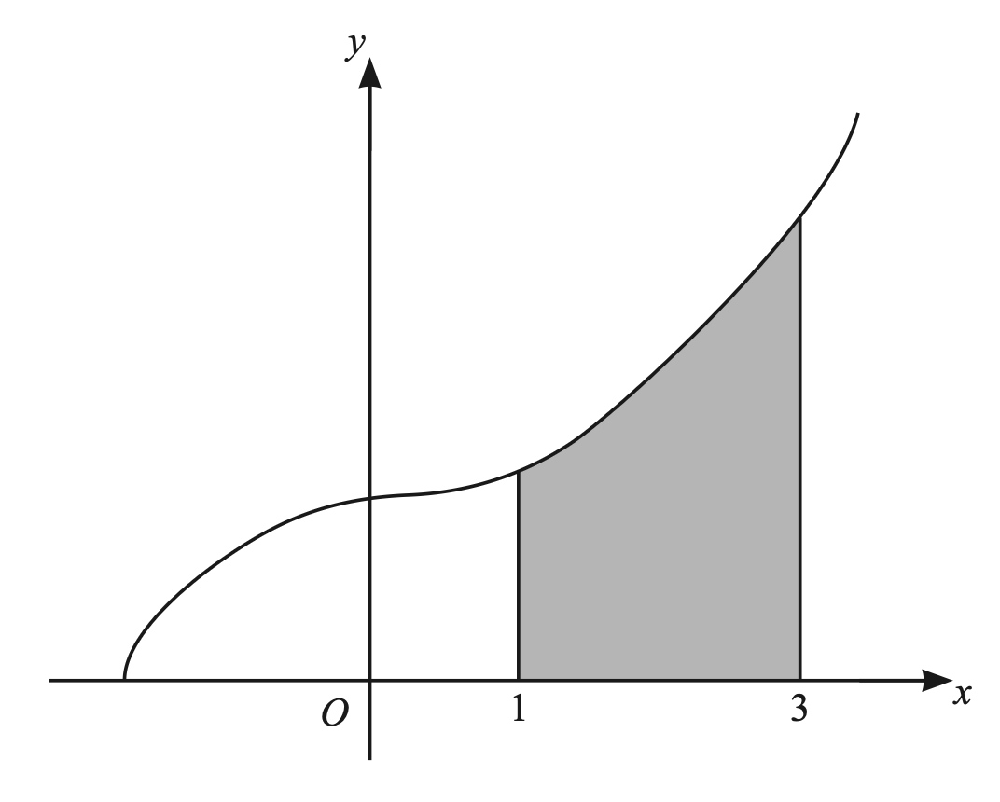
The diagram shows the curve with equation y=(2x^3+10)^{1/2}.
Find the equation of the tangent to the curve at the point where x=3. Give your answer in the form ax+by+c=0 where a, b and c are integers. [5]
The region shaded in the diagram is enclosed by the curve and the straight lines x=1, x=3 and y=0. Find the volume of the solid obtained when the shaded region is rotated through 360^\circ about the x-axis. [3]
Show detailed mark scheme answer
For (a), at x=3, y=8 and
\frac{dy}{dx}=\frac{3x^2}{(2x^3+10)^{1/2}}=\frac{27}{8}.
Therefore the tangent is
y-8=\frac{27}{8}(x-3) \Longrightarrow\boxed{27x-8y-17=0}.
For (b), because y^2=2x^3+10,
V=\pi\int_1^3 y^2\,dx =\pi\int_1^3(2x^3+10)\,dx.
Therefore
V=\pi\left[\frac{x^4}{2}+10x\right]_1^3 =\pi\left(\frac{81}{2}+30-\frac12-10\right) =\boxed{60\pi}.Question 17 · 9709/11/O/N/24 Q5(a–b)
The equation of a curve is such that \dfrac{dy}{dx}=4x-3x^{1/2}+1.
Find the x-coordinate of the point on the curve at which the gradient is \frac{11}{2}. [3]
Given that the curve passes through the point (4,11), find the equation of the curve. [4]
Show detailed mark scheme answer
For (a), let t=\sqrt{x}. Then
4x-3\sqrt{x}+1=\frac{11}{2} \Longrightarrow 8t^2-6t-9=0 \Longrightarrow (4t+3)(2t-3)=0.
Since t\ge0, t=\frac32, so
\boxed{x=\frac94}.
For (b), integrate:
y=\int(4x-3x^{1/2}+1)\,dx =2x^2-2x^{3/2}+x+c.
Use (4,11):
11=2(4)^2-2(4)^{3/2}+4+c=32-16+4+c=20+c.
Hence c=-9, and
\boxed{y=2x^2-2x^{3/2}+x-9}.Question 18 · 9709/11/O/N/24 Q7(a–b)
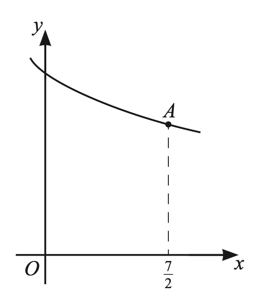
The diagram shows part of the curve with equation y=\dfrac{12}{(2x+1)^{1/3}}. The point A on the curve has coordinates \left(\frac72,6\right).
Find the equation of the tangent to the curve at A. Give your answer in the form y=mx+c. [4]
Find the area of the region bounded by the curve and the lines x=0, x=\frac72 and y=0. [4]
Show detailed mark scheme answer
For (a),
\frac{dy}{dx}=-8(2x+1)^{-4/3},\qquad \left.\frac{dy}{dx}\right|_{x=7/2}=-\frac12.
Thus
y-6=-\frac12\left(x-\frac72\right) \Longrightarrow\boxed{y=-\frac12x+\frac{31}{4}}.
For (b), the required area is
A=\int_0^{7/2}12(2x+1)^{-1/3}\,dx.
An antiderivative is 9(2x+1)^{2/3}, so
A=\left[9(2x+1)^{2/3}\right]_0^{7/2} =9\left(8^{2/3}-1\right) =9(4-1) =\boxed{27}.Question 19 · 9709/12/O/N/24 Q7(a–b)
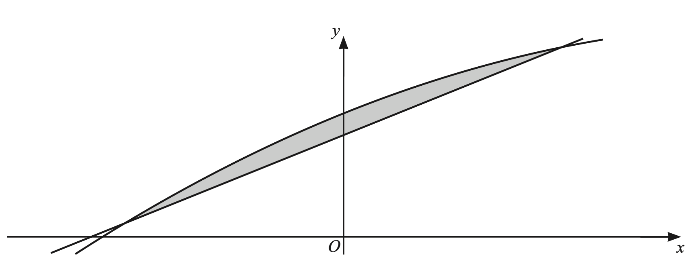
The diagram shows part of the curve with equation y=-2x^2+8x+11 and the line with equation y=8x+9.
By expressing -2x^2+8x+11 in the form -a(x-b)^2+c, where a, b and c are positive integers, find the coordinates of the vertex of the graph with equation y=-2x^2+8x+11. [3]
Find the area of the shaded region. [5]
Show detailed mark scheme answer
For (a),
-2x^2+8x+11=-2(x-2)^2+19,
so the vertex is \boxed{(2,19)}.
For (b), find the intersections:
-2x^2+8x+11=8x+9 \Longrightarrow -2x^2+2=0 \Longrightarrow x=\pm1.
The curve is above the line between x=-1 and x=1. Therefore
A=\int_{-1}^{1}\left[(-2x^2+8x+11)-(8x+9)\right]dx =\int_{-1}^{1}(2-2x^2)\,dx.
Hence
A=\left[2x-\frac23x^3\right]_{-1}^{1} =\boxed{\frac83}\approx2.67.